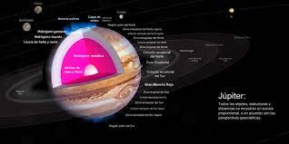

Júpiter es el planeta más grande del sistema solar y el quinto en orden de lejanía al Sol.3 Es un gigante gaseoso que forma parte de los denominados planetas exteriores. Recibe su nombre del dios romano Júpiter (Zeus en la mitología griega). Es uno de los objetos naturales más brillantes en un cielo nocturno despejado, superado solo por la Luna, Venus y algunas veces Marte.4 Se trata del planeta que ofrece un mayor brillo a lo largo del año dependiendo de su fase. Es, además, después del Sol, el mayor cuerpo celeste del sistema solar, con una masa casi dos veces y media de la de los demás planetas juntos (con una masa 318 veces mayor que la de la Tierra y tres veces mayor que la de Saturno, además de ser, en cuanto a volumen, 1321 veces más grande que la Tierra). También es el planeta más antiguo del sistema solar, siendo incluso más antiguo que el Sol; este descubrimiento fue realizado por investigadores de la universidad de Münster en Alemania.56 Júpiter es un cuerpo masivo gaseoso, formado principalmente por hidrógeno y helio, carente de una superficie interior definida. Entre los detalles atmosféricos es notable la Gran Mancha Roja (un enorme anticiclón situado en las latitudes tropicales del hemisferio sur), la estructura de nubes en bandas oscuras y zonas brillantes, y la dinámica atmosférica global determinada por intensos vientos zonales alternantes en latitud y con velocidades de hasta 140 m/s (504 km/h).78
